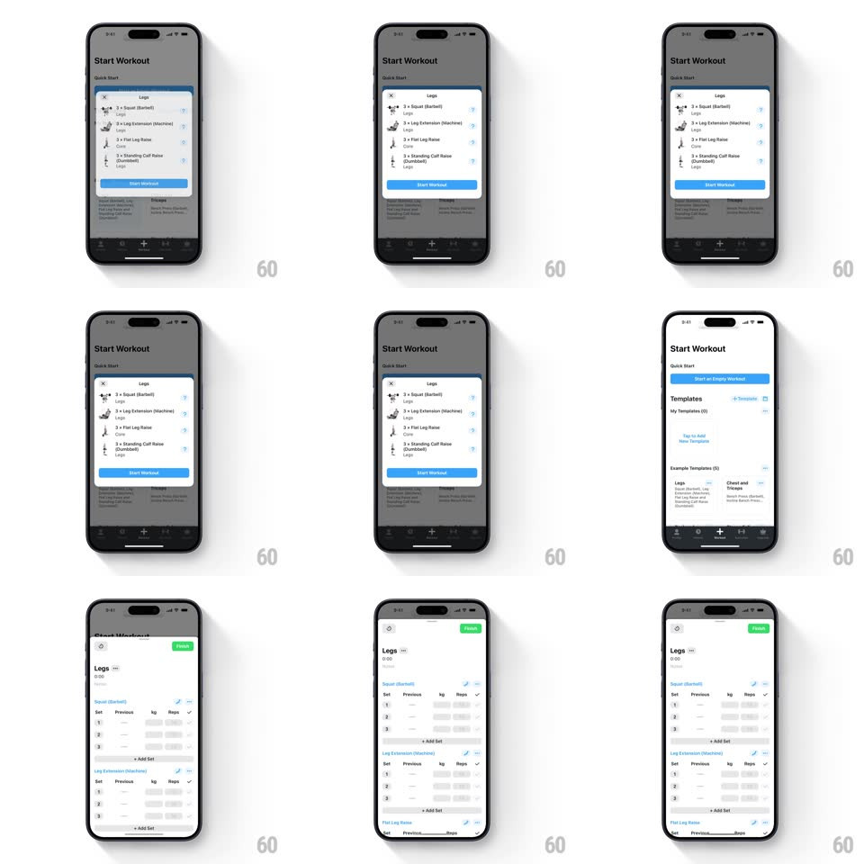

Media
Frame-by-frame

Rebuild this interaction 1:1: Strong's workout start - tapping a template raises a preview sheet with the exercise list, and tapping "Start Workout" slides the sheet down away as the active workout screen slides up to fill the viewport with set tables and a running timer.

Rebuild this interaction 1:1: Strong's workout start - tapping a template raises a preview sheet with the exercise list, and tapping "Start Workout" slides the sheet down away as the active workout screen slides up to fill the viewport with set tables and a running timer. ## Integration Integration: stack-agnostic spec - springs given as stiffness/damping, timed motions as duration + curve; map every value to your framework and animation library of choice. ## Scene Light "Start Workout" screen: "Start an Empty Workout" blue button, My Templates and Example Templates sections (Legs, Chest and Triceps cards). Sheet state: a rounded sheet over a dimmed backdrop showing the template name, exercise rows (3 x Squat (Barbell), 3 x Leg Extension (Machine), 3 x Flat Leg Raise, 3 x Standing Calf Raise) with icons, and a blue "Start Workout" button. Active state: full-screen workout view - "Legs" header, elapsed timer, green "FINISH" button, per-exercise set tables (Set / Previous / kg / Reps columns) and "+ Add Set" rows. ## Motion spec Pattern: sheet-to-fullscreen handoff, ~450ms. - Raise: the template sheet slides up over a 40% dim (350ms, ease-out, corner radius 16px). - Start: the sheet slides down and off (300ms, ease-in) while the active workout screen slides up from the bottom behind it (400ms, ease-out, overlapping by 100ms). - Timer: the elapsed timer starts at 0:00 the moment the active screen lands. - Dismiss: dragging the sheet down dismisses it back to the list (gesture-driven, spring back under 30% travel). ## Calibration - The two slides overlap - the workout screen is rising as the sheet falls, never a gap. - Exercise rows and set tables keep identical ordering between sheet and active view. ## Reduced motion Sheet fades out (200ms); workout screen fades in (250ms). ## Don't miss - The green FINISH button appears only in the active state, top-right. - Set rows show Previous/kg/Reps placeholders from the first frame - no pop-in later.